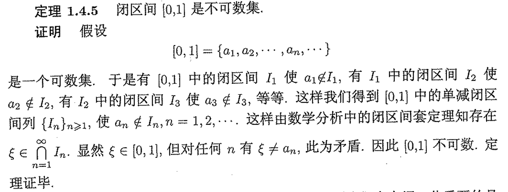

实变函数¶
序列极限¶
上下极限的定义¶
设 \(\{A_n\}\) 是集合序列, 定义其上下极限为
判断点在不在上下极限中¶
-
\(x\in \overline{\lim} A_n \iff \forall N>0, \exists n>N, s.t. x\in A_n\)
- 即 \(x\) 在 \(A_n\) 中出现无穷多次
-
\(x\in \underline{\lim} A_n \iff \exists N>0, \forall n>N, s.t. x\in A_n\)
- 即集合序列中只有有限个集合不包含 \(x\)
-
上面意味着下极限包含在上极限中
序列极限计算¶
若序列单调, 那么其上下极限就是序列的极限, 并且

证明 \(n\) 元数列具有连续统势¶
- \(f:[0,1]\to \{n\text{元数列}\},s.t.f(x)=\{a_1,a_2,\cdots\}s.t.x=0.a_1a_2,\cdots\) 为 \(n\) 进制表示
证明可数集的子集全体有连续统势¶
- 只需要对 \(\mathbb{N}\) 的子集进行证明,
- \(f:A\to \{2\text{元数列}\},s.t.f(x)=\{a_1,a_2,\cdots\},a_i = \begin{cases} 1 & i\in A \\ 0 & i\notin A \end{cases}\)
-
建立了 \(\mathbb{N}\) 到 \(\{2\text{元数列}\}\) 的映射,后者具有连续统势
-
因此 \(\mathbb{R}^n\) 有连续统势
- 全体实数列 \(\mathbb{R}^{\mathbb{N}}\) 有连续统势
Bernstein定理¶
- 就是说集合势之间的比较和实数之间通常的大小比较有相同的性质
- \(\overline{\overline{A}} \leq \overline{\overline{A}}\)
- 若 \(\overline{\overline{A}}\leq \overline{\overline{B}} \leq \overline{\overline{C}}\), 那么 \(\overline{\overline{A}}\leq \overline{\overline{C}}\)
- 若 \(\overline{\overline{A}}\leq \overline{\overline{B}},\overline{\overline{B}}\leq \overline{\overline{A}}\), 那么 \(\overline{\overline{A}}=\overline{\overline{B}}\)
证明连续函数全体有连续统势¶
-
只需要证明 \([0,1]\) 上连续函数有连续统势即可, 令 \(\mathcal{F}\) 为 \([0,1]\) 上连续函数全体
- 首先对任意 \(\lambda \in\mathbb{R},f_\lambda (x)=\lambda\) 是连续函数, 这说明 \(c\leq \overline{\overline{\mathcal{F}}}\)
- 其次取 \([0,1]\) 中有理数全体 \(\{r_n\}\), 对任意连续函数 \(f\in\mathcal{F},\{f(r_n)\}\) 是实数列. 这建立了 \(\mathcal{F}\) 到实数列全体的一个单射, 这说明 \(\overline{\overline{\mathcal{F}}}\leq c\)
证明不存在基数最大的集合, 即 \(\mu < 2^\mu\)¶
-
取集合 \(A\),其幂集记为 \(P(A)\)
- \(f:A\to P(A),s.t.f(x)=\{x\}\) 是单射, 这说明 \(\mu \leq 2^\mu\)
- 其次若存在满射 \(g:A\to P(A)\), 取 \(A^*=\{x\in A:x\notin g(x)\}\), 因为 \(g\) 是双射,于是存在唯一的 \(x^*\in A,s.t.g(x^*)=A^*\) 可以说明, 不管 \(x^*\) 在不在 \(g(x^*)\) 中,都有矛盾
开集¶
- 定义:每一个点都是内点
-
\(\mathbb{R}\) 中的开集至多是可数个两两不交的开区间的并
- \(\mathbb{R}^n\) 中的开集是可数个两两不相交的半开长方体的并
闭集¶
- 补是开集的集合
- 集中任何点列如果有极限,那么一定收敛到集合内
完备集¶
- 定义:没有孤立点的闭集
- \(F\) 是 \(\mathbb{R}\) 的完备集当且仅当 \(F^c\) 至多是可数个两两不交且端点不重合的开区间的并
- 这里要求端点不重合是因为 \(F\) 没有孤立点
- \(F\) 是 \(\mathbb{R}\) 的完备集当且仅当 \(F^c\) 至多是可数个两两不交且端点不重合的开区间的并
稠集¶
- 定义:任意开子集都和其交非空
- 当且仅当其闭包是全季
疏集¶
- 任意开集都有非空子集和其交为空
- 当且仅当其闭包的内核是空集
Cantor 完备集的构造及其性质¶
-
\(C=[0,1]-G,G=\bigcup \{I_{n,k}:1\leq k\leq 2^{n-1},n\geq 1\}\) 是两两不交且端点不重合的开区间的并, 于是 \(C\) 是完备集
- \(C\) 没有内点(显然任何领域和 \(G\) 有交)
- \(G\) 是稠集, 任意开区间都和 \(G\) 有交, 且 \(|G|=\sum\limits_{n=1}^{\infty}\frac{2^{n-1}}{3^n}=1\)
-
上面说明 \(C\) 的测度是 \(0\), 但是它却具有连续统势
- 事实上对任意 \(x\in [0,1],x=\sum\limits_{n=1}^\infty\frac{a_n}{3^n}\), \(I_{1,k}\) 中点 \(a_1=1\), \(I_{n,k}\) 中的点 \(a_n=1\), 于是所有由 \(0,2\) 组成的三元数列全体的子集都在 \(C\) 中,这相当于二元数列全体, 从而 \(C\) 有连续统势
-
开拓的 \(Cantor\) 函数
- \(f(x)=\frac{2k-1}{2^n},x\in I_{n,k},f(0)=0,f(1)=1\)
Lebesgue测度¶
- 勒贝格积分和黎曼积分的区别在于:黎曼积分是通过分割区间,然后求和,而勒贝格积分是通过分割函数值,然后求和
Lebesgue外测度¶
- 集合 \(E\) 的外测度定义为
[!NOTE] 因为我们只对开区间(闭区间)定义了测度(长度)
外测度的性质¶
- 可数集的外测度为 \(0\)
- 单调性: \(E\subset F\Rightarrow m^*(E)\leq m^*(F)\)
- 次可加性: \(m^*(\bigcup\limits_{n=1}^\infty E_n)\leq \sum\limits_{n=1}^\infty m^*(E_n)\)
可测集¶
-
定义: \(E\) 是可测集当且仅当对任意 \(A\subset \mathbb{R}\),有 \(m^*(A)\geq m^*(A\cap E)+m^*(A\cap E^c)\)
- 事实上反过来的不等式是恒成立的(次可加), 于是
- \(E\) 可测当且仅当 \(m^*(A)=m^*(A\cap E)+m^*(A\cap E^c),\forall A\)
-
可测集的外测度称为其测度
可测集的性质¶
- 可测集的补,交,并(至多可数)都是可测集
不可测集的例子¶
利用等价关系 \(x\sim y \iff x-y\in \mathbb{Q}\), 和选择公理
-
首先 \(\sim\) 把 \([0,1]\) 划分成等价类的并, 在每一个等价类中选取一个代表元, 由选择公理可知存在这样的选择, 组成集合 \(F\)
-
对 \(F\) 做平移 \(F_n={x+r_n:x\in F},\{r_n\}\) 是 \([-1,1]\) 上的有理数全体, 可以证明 \(F_n\) 两两不交, 且 \([0,1]\subset \bigcup\limits_{n=1}^\infty F_n\subset [-1,2]\)
-
假设 \(F\) 可测, 由于 \(F_n\) 两两不交并且由测度平移不变性可知 \(m(F_n)=m(F)\), 于是有
-
\[1\leq m([0,1])\leq \sum\limits_{n=1}^\infty m(F_n)=\sum\limits_{n=1}^\infty m(F) \leq m([-1,2])=3\]
- 这使得无论 \(m(F)\) 取什么值都会产生矛盾, 从而 \(F\) 不可测
-
-
Lebesgue可测但是不是Borel可测的例子¶
- 首先 Lebesgue测度是完备的, 所谓完备就是说零测集的任意子集都是可测集
-
其次我们知道 Cantor集是零测的, 并且具有连续统势
- 已经知道 Cantor 函数是连续不减的, 令 \(g(x)=\frac{f(x)+x}{2}\), 那么 \(g\) 是连续严格增的函数, 从而 \(g\) 把 Borel 集映到 Borel 集合
-
考虑不可测集 \(F\) 在 \(g\) 下的原像, \(g^{-1}(F)\subset C\), 由勒贝格测度完备性可知 \(g^{-1}(F)\) 是可测集, 但是 \(g^{-1}(F)\) 不是 Borel 集
- 因为如果是, 那么 \(F\) 就是 Borel 集, 从而可测, 那就矛盾
事实上,在勒贝格可测集中, Borel 集合只占微不足道的一部分¶
(至少是包含的)
其中, \(\mathcal{B}\) 为Borel集, \(\mathcal{N}=\{N \subset \mathbb{R}: m(N)=0\}\). 我们将要证明 \(\operatorname{card}(\mathcal{B})=\aleph_1, \operatorname{card}(\mathcal{L}) \geq 2^{\aleph_1}\), 这意味着Borel集在Lebesgue可测集中的占比是可以“忽略不计“的.
\(\operatorname{card}(\mathcal{L}) \geq 2^{\aleph_1}\)
proof. 不难证明 Cantor 集为可测集, \(\operatorname{card}(C)=\aleph_1\), 且 \(m(C)=0\), 又 Lebegue测度的完备性可知对任意 \(T \subset C, T \in \mathcal{L}\). 这意味着 \(\mathcal{P}(C) \rightarrow \mathcal{L}\) 存在一个单射; 又 \(\operatorname{card}(C)=\operatorname{card}(\mathbb{R})\), 则 \(\mathcal{L} \geq \operatorname{card}(\mathcal{P}(\mathbb{R}))=2^{\aleph_1}\).
并且
\(\operatorname{card}(\mathcal{B})=\aleph_1\)
可测集用开集和闭集来逼近¶
以下等价
-
\(E\) 可测
-
\(\forall \varepsilon>0\) 存在包含 \(E\) 的开集 \(G\) 使得 \(m^*(G-E)<\varepsilon\)
-
\(\forall \varepsilon>0\) 存在包含于 \(E\) 的闭集 \(F\) 使得 \(m^*(E-F)<\varepsilon\)
-
\(\forall \varepsilon>0,\exists F,G\) 可测, 使得 \(F\subset E\subset G,m(G-F)<\varepsilon\)
-
存在 \(G_\delta,F_\sigma\) 集 \(G,F\) 使得 \(m^*(G-E)=m^*(F-E)=0\)
\(G_\delta,F_\sigma\) 集¶
- \(G_\delta\) 集是可数个开集的交, \(F_\sigma\) 集是可数个闭集的并
代数和 \(\sigma\) 代数¶
- 代数: 集族补封闭, 有限并封闭
- \(\sigma\) 代数: 集族补封闭, 可数并封闭
包含集族的所有代数的交称为集族生成的代数¶
包含集族的所有 \(\sigma\) 代数的交称为集族生成的 \(\sigma\) 代数¶
可测函数¶
可测函数的定义¶
\(f\) 称为可测函数当且仅当对任意 \(\alpha\in\mathbb{R},\{x:f(x)>\alpha\}\) 是可测集(这里各种不等号都是等价的)
简单函数¶
值域只取有限个值的可测函数
Egoroff 定理¶
设 \(f_n,f\) 都是测度有限的集合 \(D\) 上的几乎处处有限的可测函数, 若 \(f_n\to f\) 几乎处处, 那么对任意 \(\varepsilon>0\), 存在 \(D\) 的闭子集 \(F\) 使得 \(m(D-F)<\varepsilon\) 且 \(f_n\) 在 \(F\) 上一致收敛到 \(f\)
Riesz 定理¶
设 \(f,f_n\) 都是可测集 \(D\) 上几乎处处有限的可测函数,那么
-
若 \(f_n\) 测度收敛到 \(f\), 那么存在 \(f_n\) 的一个子列 \(f_{n_k}\) 使得 \(f_{n_k}\) 几乎处处收敛到 \(f\)
-
若 \(D\) 测度有限, 且 \(f_n\) 几乎处处收敛到 \(f\), 那么 \(f_n\) 测度收敛到 \(f\)
Lusin 定理¶
设 \(f\) 是可测集 \(E\) 上的几乎处处有限的可测函数, 那么对任意 \(\varepsilon>0\), 存在沿着 \(D\) 连续的函数 \(g\) 使得 \(m(\{f\neq g\})<\varepsilon\) 并且 \(\sup g\leq \sup f\)
测度收敛¶
说 \(f_n\) 在 \(D\) 上测度收敛到 \(f\) 是说 \(\forall \varepsilon>0\)
Lebegue积分¶
- 定义: 对简单函数定义积分, 然后对一般函数定义积分
简单函数的积分定义为 \(\int_D fdx=\sum\limits_{i=1}^n a_i m(A_i)\)
非负可测函数的积分定义为 \(\int_D fdx=\lim\limits_{n\to\infty}\int_D f_ndx\)
Levi 单调收敛定理¶
设 \(f_n,f\) 都是 \(D\) 上的非负可测函数, 并且几乎对所有 \(x\) 有 \(f_n(x)\) 单增收敛到 \(f(x)\), 那么积分和极限可交换
Fatou 定理¶
下极限的积分小于等于积分的下极限
Fubini 定理¶
设 \(f\) 在 \(\mathbb{R}^q\times \mathbb{R}^p\) 上可积, 那么
-
对几乎任意 \(x\in \mathbb{R}^q\), \(f(x,y)\) 在 \(\mathbb{R}^p\) 上可积
-
\(F(x)=\int_{\mathbb{R}^p}f(x,y)dy\) 在 \(\mathbb{R}^q\) 上可积
-
\(\int_{\mathbb{R}^q\times \mathbb{R}^p}f(x,y)dxdy=\int_{\mathbb{R}^q}dx\int_{\mathbb{R}^p}f(x,y)dy\)
有界变差函数¶
\(T_a^b = \sup \{ V(X):X \text{是} [a,b] \text{上的网} \}<\infty\) 就称 \(f\) 有界变差
其中 \(X: a=x_0<x_1<\cdots<x_n=b\), \(V(X)=\sum\limits_{i=1}^n|f(x_i)-f(x_{i-1})|\)